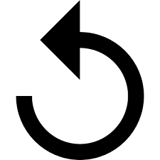

Есть 17 официальных правил игры, каждое из которых содержит список оговорок и руководящих принципов. Эти правила предназначены для применения на всех уровнях футбола, хотя есть некоторые изменения для таких групп, как юниоры, взрослые, женщины и люди с ограниченными физическими возможностями. Законы очень часто формулировались в общих чертах, которые позволяют упростить их применения в зависимости от характера игры. Правила игры публикуются в ФИФА, но поддерживаются Международным советом футбольных ассоциаций (IFAB)Каждая команда состоит максимум из одиннадцати игроков (без учёта запасных), один из которых должен быть вратарём. Правила неофициальных соревнований могут уменьшить количество игроков, максимум до 7. Вратари являются единственными игроками, которым позволено играть руками при условии: они делают это в пределах штрафной площади у своих собственных ворот. Хотя есть различные позиции на поле, эти позиции не обязательны[37]. Отдельная футбольная игра называется матч, который в свою очередь состоит из двух таймов по 45 минут. Пауза между первым и вторым таймами составляет 15 минут, в течение которой команды отдыхают, а по её окончании меняются воротами[38]. Цель игры — забить мяч в ворота противника, сделать это как можно большее количество раз и постараться не допустить гола в свои ворота. Матч выигрывает команда, забившая большее количество голов. В случае, если в течение двух таймов команды забили одинаковое количество голов (ничья), то или фиксируется ничья, или победитель выявляется согласно установленному регламенту матча. В этом случае может быть назначено дополнительное время — ещё два тайма по 15 минут каждый. Как правило, между основным и дополнительным временем матча командам предоставляется перерыв. Между дополнительными таймами командам даётся лишь время на смену сторон. Одно время в футболе существовало правило, по которому победителем объявлялась команда, первой забившая гол (правило «золотого гола») или выигрывавшая по окончании любого из дополнительных таймов (правило «серебряного гола»). В настоящий момент дополнительное время либо не играется вовсе, либо играется в полном объёме (2 тайма по 15 минут). Если в течение дополнительного времени победителя выявить не удаётся, проводится серия послематчевых пенальти, не являющихся частью матча: по воротам противника с расстояния 11 метров пробивается по пять ударов разными игроками. Если количество забитых пенальти у обеих команд будет равным, тогда пробиваются по одной паре пенальти, пока не будет выявлен победитель
Стандартными положениями в футболе являются штрафные, свободные, угловые и прочие удары, которые наносятся по сигналу судьи.
Стандартными положениями являются:
Самыми частыми нарушениями являются:
Недисциплинированное поведение в футболе может быть представлено таковыми явлениями:
Судьи следят за порядком на футбольном поле. Их работа заключается в определении нарушения правил. Перед матчем судьи должны проверить сетку ворот и разметку футбольного поля и провести анализ погодных условий[45]. После игры судьи пишут протокол, в котором объясняют все свои решения[45]. Во время игры судья должен определять, например, сколько времени будет добавлено к основному или пересёк мяч линию ворот или нет[45]. Если игрок на усмотрение рефери нарушил правило, он должен назначить штрафной[45]. Судья может вынести игроку предупреждение или остановить матч по каким-либо причинам[45]. В среднем за матч судья пробегает 10 километров
Помимо главного судьи в футболе есть ещё и помощники судьи (боковые арбитры)[45]. Они помогают определить положение «вне игры»[45], а также выход мяча за боковую и лицевую линии поля. Также они могут сказать главному судье в ситуации, когда он не увидел нарушение правил или гол[45]. В 2012 году УЕФА увеличил число помощников судьи, добавив арбитров за каждыми воротами
В связи с высокой сложностью и ответственность принятия решений судьями и, как следствие — частыми ошибками — неоднократно поднимался вопрос о разрешении применения ими технических средств — как, например, уже давно делается в хоккее и баскетболе. Для облегчения бремени в самых ответственных случаях — при игре в штрафной площади и взятиях ворот — УЕФА в 2012 году были введены дополнительные судьи за воротами, а с 2013 года — применяется Система автоматического определения голов.
